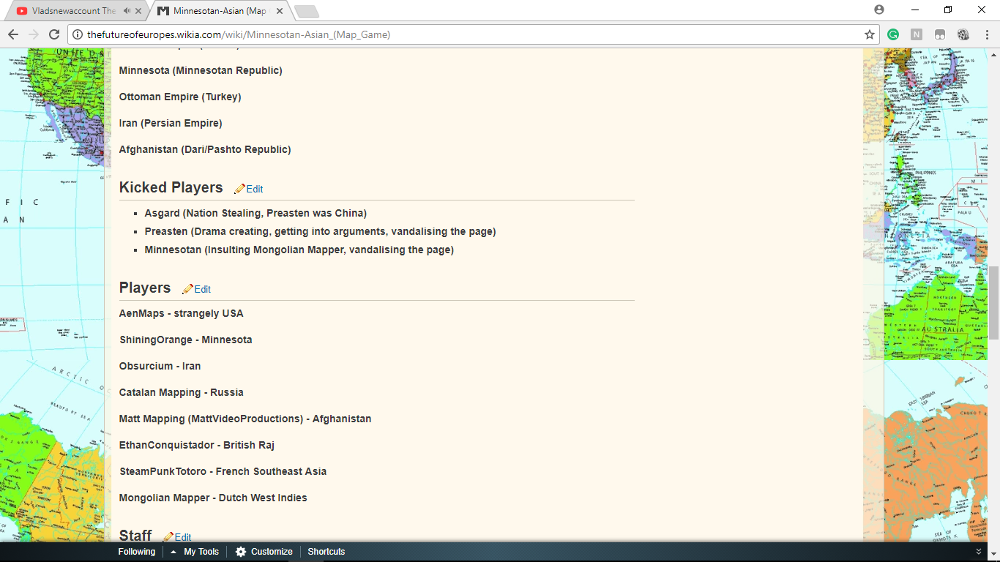

Well sorry i dont want him trying to defend himself with all the shit he could think of and make me suffer for it


Proof hes gone mad with power.
he kicked minnesotan from Minnesotans Map game and
Kicked me for saying well actually i was china first, when asgard shifted me to japan.